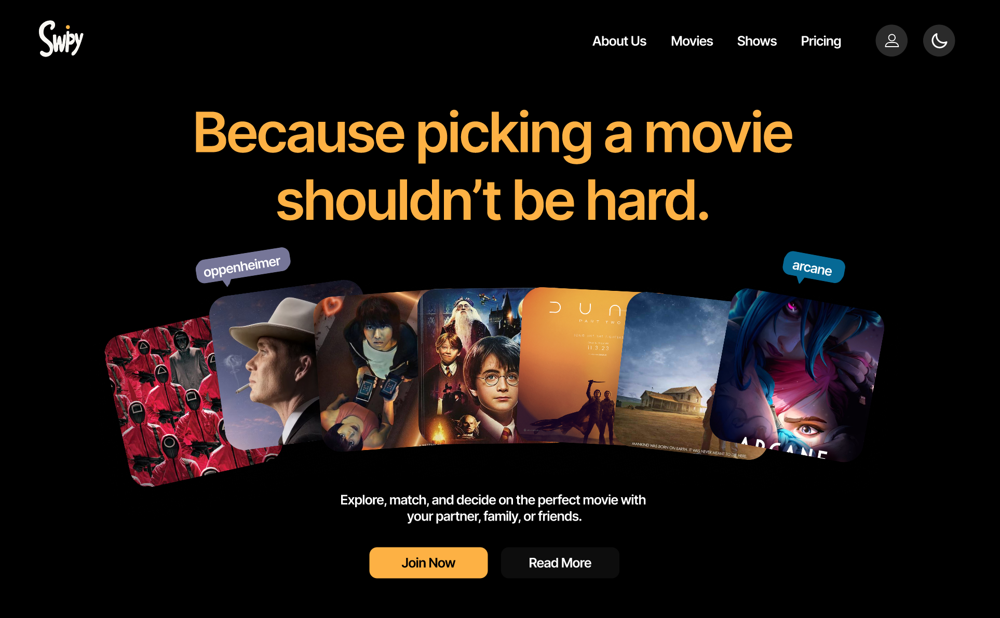
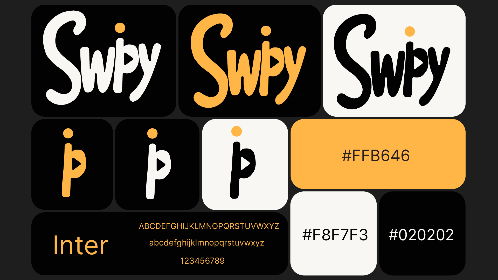

SWIPY
Parce que choisir un film ne devrait pas être un combat.
Direction de l'identité et ingénierie marketing d'une app virale.

01 Le Concept Global
Le Problème
Le "scroll infini" sur les plateformes de streaming tue l'expérience utilisateur. J'ai identifié que la frustration ne venait pas du manque de choix, mais de l'incapacité à décider à deux.
Ma Solution
Swipy transforme la prise de décision en jeu. En tant que Project Lead, j'ai supervisé la création d'une application qui agrège les catalogues pour permettre de "matcher" instantanément sur un film, comme sur une application de rencontre.
02 Ma Roadmap Stratégique
Genèse du Logo & Branding
Creative LeadConception de l'identité visuelle complète. J'ai focalisé mon travail sur un logo iconique symbolisant le mouvement et l'interaction fluide.
Architecture Marketing
Marketing StrategistÉlaboration du plan de communication digital. J'ai défini les piliers de contenu et le calendrier éditorial pour maximiser la visibilité organique.
Lancement du Teasing
Community LeadPhase d'acquisition pré-lancement. J'ai piloté les campagnes sur les réseaux sociaux pour créer une liste d'attente et générer de la hype.
Optimisation & Scale
Directeur de ProjetSuivi de la production dev et déploiement de la stratégie de croissance haute intensité sur TikTok et Instagram.
03 Design & Branding Focus
Le cœur de mon intervention a été la création d'un logo "Motion-Ready". Je voulais une marque qui respire la tech tout en restant ultra-accessible.

J'ai opté pour une typographie Inter pour sa clarté chirurgicale sur écran mobile, couplée à une palette de couleurs vibrantes pour stimuler l'engagement. Le logo, que j'ai dessiné pour suggérer le geste du "swipe", est devenu le pivot central de toute l'interface.
04 Social Media Strategy
On ne vend pas une application, on vend une solution à une soirée gâchée. J'ai bâti la stratégie sur la relatabilité.
Tone of Voice
Brand PersonalityL'Approche
J'ai imposé un ton "Pop & Witty". L'idée : Swipy doit parler comme le pote qui a toujours les meilleurs plans ciné. Pas de jargon corporate.
Le Pourquoi
Pour toucher la Gen Z, il faut briser le quatrième mur. En utilisant des codes issus de la culture meme, j'ai créé un lien émotionnel fort avec l'audience avant même qu'ils ne téléchargent l'app.
Algorithmic Scale
Growth HackingLa Méthode
- TikTok First : 5 publications par semaine pour forcer l'algorithme.
- Reels : Contenu premium pour la rétention communautaire.
Le Résultat
Ma stratégie de "High Intensity" a permis d'occuper l'espace mental des utilisateurs. Chaque contenu était pensé pour devenir un asset marketing partageable.
05 Impact & Livraison
Le projet s'est conclu par un système de marque complet et une communauté active. J'ai livré une solution clé en main, de l'identité visuelle à la machine marketing, prête à scaler.